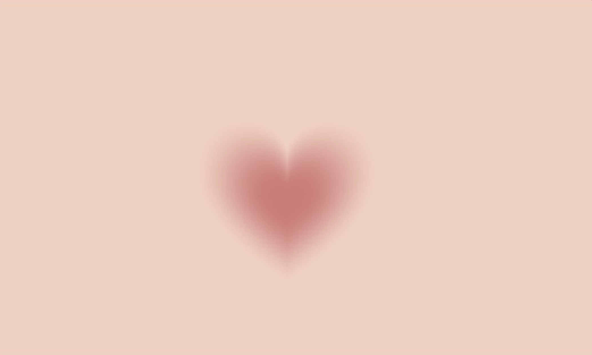

This quiz helps you reflect on how you work best as a creative.
This quiz is a way for me—and other creative people like me—to figure out how we work best: are we more like old-school artists who love slow, hands-on creation, or are we fast-moving digital creators jumping between apps, trends, and tools? As someone who spends a lot of time on Instagram and TikTok and also studies design and tech, I’m always switching between making real things and posting online. Sometimes it’s hard to know if I’m inspired or just overwhelmed. So, let's try to find out together. Let's go!
